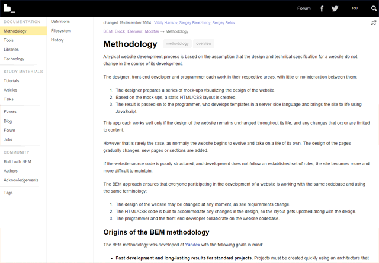

你知道的，Javascript是世界上第一的变成语言。它能够在web端，移动混合应用（像PhoneGap和Appcelerator），以及服务端（NodeJS和Wakanda）等其他地方都有应用。它也经常被用来当做很多世界上新的开发者的入门语言。它既能让我们在网页上展示弹窗，也能用来控制机器人。能够使用写出有组织，性能良好的javascript
你知道的，Javascript是世界上第一的变成语言。它能够在web端，移动混合应用（像PhoneGap和Appcelerator），以及服务端（NodeJS和Wakanda）等其他地方都有应用。它也经常被用来当做很多世界上新的开发者的入门语言。它既能让我们在网页上展示弹窗，也能用来控制机器人。能够使用写出有组织，性能良好的javascript
在浏览器中使用require('modules')
使用node的风格来组织浏览器端的代码并且可以加载通过npm安装的模块。
browerify将递归分析你应用中所有的require()调用去构建一个能够通过单个<script>标签引用的js文件。
npm install -g browserify
module.exports=function(n){return n*111;}
module.exports=function(s){return s+"!";}
创建main.js入口文件
var foo=require("foo.js");
var bar=require("bar.js");
var str=foo(100)+bar("bar");
console.log(str);
browserify main.js > bundle.js
参考链接：
在这个教程，我们会介绍一下使用CSS技巧来渲染出圆形的元素，主要来实现这个效果的CSS属性是border-radius.
尽管对于正方形的图片来实现圆形这个效果是相当简单的，但是对于长方形来说可能需要多一点点工作。

一个百分百正方形的img标签要变成圆形的只需要一行CSS代码。这个技巧在正方形图片上使用的最方便。
HTML
<img class="circle--square" src="woman.png" />
CSS
.circular--squareP{
border-radius:50%;
}
通过设置img标签的所有的border-radius属性为正方形宽/高的50%，我们就可以把这个img标签变成圆的。

长方形图片会稍微有一点技巧一点。
去渲染一个圆形，必须以圆形图片为基础
要解决这个问题，我们可以通过在img标签外面套一层div，然后我们通过将超过这个外层div的img标签的内容给裁掉来实现。具体的话可以通过将外层div的overflow属性设置为hidden。
为了能够让照片的主题不要被裁掉，我们必须要区别对待水平和垂直方向的图片。
HTML
<div>
<img src="images/brack-obama.png" />
</div>
CSS
.circular--landscape{
display:inline-block;
position:relative;
width:200px;
height:200px;
overflow:hidden;
border-radius:50%;
}
.circular--landscape img{
width:auto;
height:100%;
margin-left:-50%;
}
高度和宽度属性必须要保持一样来确保这个div（.circular–landscape）能够作为正方形渲染起来
除此之外，高度和宽度属性必须要等于或者小于img的高度。这能够确保img元素能够占满外层div而不会多出一部分空白
一般来说，水平方向图片的主题（但不一定）会位于图片的中心位置。为了能够让我们尽量不会把图片的主题裁剪啦，我们可以通过把图片往左移来弥补图片剪切的内容有点偏右的问题。
我们移动img标签的大小是外层div的25%，在这个例子中就是向左50px，我们可以通过设置margin-left的属性来完成设置
margin-left:-50px;

图片的主题会接近图片的水平方向中心的假设并不一定是对的，最好在你选择使用这个技巧的使用把这个假设记住。
HTML
<div>
<img src="images/woman-portrait.png" />
</div>
CSS
.circular--portrait{
position:relative;
width:200px;
height:200px;
overflow:hidden;
border-radius:50%;
}
.circular--portrait img{
width:100%;
height:auto;
}
对于垂直方向上的图片的主题在垂直方向的中心的假设当然也不适用于每一个垂直方向上的图片。
和水平方向的图片类似，外层div的宽度和高度最好等于垂直方向图片你的宽度，这样的话可以产生最好的效果。
对于垂直方向的图片，我们把宽度设置为100%，高度设置为auto（和水平方向的图片相反）
我们不需要移动这个img元素，因为这张照片的主题就在上方中心位置。

这个技巧最好适用于正方形的img标签，主题正好位于图片的中心。但是，我们的世界并不是那么完美的，所有如果需求是这样，我们就可以使用div来把长方形img标签变圆。
CSS中用来负责把图片变圆的属性是border-radius，把边的圆角变成高度/宽度的50%就可以产生一个圆。
原文链接：circular-images-css
CSS的box-shadow可以被用来给块级元素一个外阴影或者是内阴影。接下来让我们仔细地看一下这个CSS的特性吧。
下面有三个把CSS的box-shadow属性使用在div里的例子。
### 例１：简单的外阴影
下面是是给副标题添加阴影的样式。
box-shadow:0 0 10px gray;

一个内阴影可以通过使用inset属性值来渲染出来。
box-shadow:inset 0 0 10px;

这个例子中我们通过水平和垂直方向下和右偏移5px来实现阴影向右下方偏移
box-shadow:5px 5px 10px;

加入你想要阴影向左上方偏移呢？我们可以通过将水平和垂直方向的偏移量设置为-5px，正如下面的例子：
box-shadow:-5px -5px 10px;

既然你已经看到了box-shadow在现实中的使用，接下来让我们更加深入地了解一下。
box-shadow的一般语法如下：
box-shadow:[inset] [horizontal offset] [vertical
offset] [blur radius] [spread distance] [color]
CSS的box-shadow可能会有6个属性值：
只有两个属性是必须的：水平偏移和垂直偏移量。
四个属性值，水平偏移，垂直偏移，模糊半径，扩展距离，必须使用CSS长度单元（比如：px,em,%等）
这个颜色值必须是必须是一个颜色单元，比如十六进制值（如：#000000）。
| 属性 | 是否必须 | 单位 | 默认值 |
|---|---|---|---|
| inset | 不是 | 关键词 | 没有指定的时候，阴影默认在外面 |
| 水平偏移 | 是 | 长度 | 没有默认值，一定有指定 |
| 垂直偏移 | 是 | 长度 | 没有默认值，一定要指定 |
| 模糊半径 | 不是 | 长度 | 0 |
| 扩展距离 | 不是 | 长度 | 0 |
| 颜色 | 不是 | 颜色 | 和box shadow属性作用的元素的color值一样 |
如果inset关键词存在，盒阴影将会放在HTML元素的内部
box-shadow:inset 0 0 5px 5px olive;

作为对比，这里是一个没有inset属性的box-shadow样式。
box-shadow:0 0 5px 5px olive;

水平偏移控制了盒子阴影在x轴的偏移。正值会把盒子的阴影向右移动，负值的话会把它向左移动。
下面的例子中，我们把水平的偏移设置成20px，刚好是水平偏移量的两倍，所以阴影水平宽度刚好是垂直高度的两倍。
box-shadow:20px 10px;

垂直偏移控制了盒阴影在y轴的偏移量。正值会把盒子的阴影向下移动，负值刚好相反会把盒子网上移动。
下面的例子中，垂直的偏移设置成-20px，刚好是水平偏移的两倍。同时，因为是负值，所以向上移动。
box-shadow:10px -20px;

这个模糊半径会影响到阴影的模糊和锐利程度。
模糊半径是可选的，如果你不指定它，默认值是0.另外，你不能指定它为负值，这个和水平偏移和垂直偏移不一样。
如果模糊半径是0，盒子阴影会很锐利并且它的颜色是很实的。随着你不断的增大这个值，它会变得越来越模糊和透明。
下面的例子，模糊半径被设置成20px，因此模糊度是相当突出。
box-shadow:5px 5px 20px;

这个扩展距离会让盒子的阴影在各个方向上都会变大或变小。如果它有一个正值，盒子阴影会在各个方向上增加大小。如果是负值，则会在各个方向上收缩。
值得注意的是，因为它的扩展距离是正5，所以会在各个方向上增加10px因为没有水平和垂直偏移。
box-shadow:0 0 10px 5px;

当扩展距离是负的时候，阴影就会在各个方向上收缩。下面的例子展示当阴影的宽度比盒子小的时候的情况
box-shadow:0 10px 10px -5px;

### 颜色
通过名字你就可以判断出来，颜色值会设置盒阴影的颜色。它可以通过任何可以表示颜色的方式来表示颜色。是否设置颜色值是可选的。
换句话说，默认情况下当你没有指明颜色值，阴影颜色会等于这个盒子对应的html元素的颜色值。比如有一个div的颜色被设置成红色，这个盒子阴影的颜色也会变成红色：
color:red;
box-shadow:0 0 10px 5px;

如果你想要设置阴影的颜色和div的颜色不一样，可以通过下面的方式，你会发现尽管你的文字颜色是红色，盒子阴影颜色依然可以是蓝色。
color:red;
box-shadow:0 0 10px 5px blue;

这个就是能够让我们变得有创造力的CSS属性。你能够在一个盒子上设置多个阴影。
语法就像下面这样。
box-shadow: [box shadow properties 1],
[box shadow properties 2],
[box shadow properties n];
换句话说，你可以通过在每个属性设置组后面添加逗号(,)来实现多阴影。
下面的例子展示了两个阴影的情况，左上方红色的阴影，右下方蓝色的阴影。
box-shadow: -5px -5px 30px 5px red,
5px 5px 30px 5px blue;

这个CSS的box-shadow属性有着很好地浏览器支持。使用这个属性在拖后腿的IE浏览器也能在IE9以后得到支持啦。

CSS在大型，复杂，快速迭代的系统中难以管理的程度是出了名的。
其中一个原因是CSS缺少内置的作用域管理机制。在CSS中，所有的一切都是全局的，这意味着任何你所做的改变都有可能层叠或者改变完全没有相关的那部分UI。
扩展的CSS语言，也称作CSS预处理器，比如说Sass，Less和Stylus，通过增加一些新的特性让写CSS代码变得更简单一点。但是就算有这些扩展性的CSS语言，在我看来，也并没有解决可扩展性问题。
在CSS没有自己的作用域机制之前，我们不得不设计出自己的一套系统来防止HTML文档的特定区域不被收到影响。
下面是关于CSS方法论的介绍可能让我们找到一些答案。
在这篇文章中，我们来看看这些CSS方法论：
CSS方法论是正式的，文档化写CSS的方法系统，它能够让我们以一系列小的，独立的方式来开发，维护和扩展前端代码。而不是作为一大块整体的不可分割的代码。
采用一种CSS方法论，甚至是你自己创建的一种，无论项目的大小和复杂度都会让CSS变得更好设计并且更好地在设计项目中迭代。
相关：大型网站的CSS开发
每一种CSS方法论都提供了一系列略微不同的解决CSS可扩展性/可维护性的方法。一个CSS方法论通常会定义一些指南：
世界上并没有“最佳”的CSS方法论。不同的方法适应于不同的个人/项目组/项目。
我们希望的是，通过了解目前已经存在的CSS方法论可以帮助我们找到一种适应我们需求的方法。或者它也许能激发你的创造力，让你创建一个你自己专属的CSS方法论。

Nicole Sullivan的面向对象的CSS，或者简单来说OOCSS，在2009年发布。
这实际上是第一个大范围采用的CSS方法论。甚至到现在也有很大的影响力。
OOCSS鼓励结构和样式的分离。这个方法论在内容和容器之间有着明显的区分。
在OOCSS中，样式规则只由CSS类选择器来写。
比如你的button元素的样式可能有两个CSS类来设置，比如下面这两个
CSS
.button{
box-sizing:border-box;
height:50px;
width:100%;
}
.grey-btn{
background:#EEE;
border:1px solid #DDD;
box-shadow:rgba(0,0,0,0.5) 1px 1px 3px;
color:#555;
}
HTML
<button class="button grey-btn"></button>
/* 后代选择器在OOCSS中是不被提倡的 */
.wrapper .blog-post .button{
...
}
通过这种方式，HTML元素的样式表现就不会依赖于其所在的特定DOM结构上，也就不会受到位置的影响。
OOCSS方法论这样做的最大好处就是它能够让作者最大的利用CSS层叠的样式的好处，而不是把它锁在高度具体的选择器中。
相关：CSS特性是怎么工作的？
作者鼓励我们无论何时都去复用已有的样式而不是创建新的样式。我们也被鼓励通过新的类来扩展样式而不是修改或者覆盖已有的CSS样式。
HTML
<!-- 反例 -->
<ul class="to-do">
<li>Combine my CSS files</li>
<li>Run CSS Lint</li>
<li>Minify my stylesheet</li>
</ul>
CSS
/* 反例 */
.to-do{
color:#FFF;
background-color:#000;
}
.to-do li:first-child{
color:#FF0000;
}
OOCSS例子
为了让我们的CSS更具模块化和灵活度，并且防止出现后代选择器，我们用下面的方式来复写上面的反例：
HTML
<!-- OOCSS -->
<ul class="to-do">
<li class="first-to-do- item">Combine my CSS files</li>
<li>Run CSS Lint</li>
<li>Minify my stylesheet</li>
</ul>
CSS
/* OOCSS */
.to-do {
color: #FFF;
background-color: #000;
}
.first-to-do-item {
color: #FF0000;
}
OOCSS的弱点是你很可能会使用很多很多的类，到最后你都无法维护或管理啦。
并且，在我看来，让OOCSS产生灵感的面向对象编程的思想在CSS中并不契合。
但是，这并不是说OOCSS的原则是无效的。相反，OOCSS是把大型CSS开发带来理性的常用的CSS方法论.

块，元素，修饰符－－更常被叫做BEM–是一个由被称为俄罗斯的谷歌的Yandex开发组开发的一套CSS体系。
在BEM背后的思想是区分实现不同角色的CSS类。这是通过把CSS命名为表示其角色的类名。
BEM刚好可以作为OOCSS的补充，因为OOCSS并没有施加任何的命名规范。
在BEM的方法论中，一个块是一个独立的模块好的UI组件。一个块可以由多个HTML元素组成，甚至有几个块组合而成。比如说导航菜单和搜索表单就是一个块的例子。
一个元素就是块的一个组件。一个元素一般用来完成一个目的。比如说，你有一个导航菜单块，那导航菜单的链接就是元素，它可以使一个列表项(li元素)或者链接(a元素).
一个修饰符是用来改变块或者元素默认样式的CSS类。
喜爱案就是BEM类命名的语法：
考虑下面的例子，标记代表的是一个登录表单：
HTML
<form>
<label>
username <input type="text" name="username" />
</label>
<label>
password <input type="password" name="password" />
</label>
<button>
Sign in
</button>
</form>
下面是使用BEM命名规则来为上面的标记命名：
HTML
<form class="loginform loginform--errors">
<label class="loginform__username loginform__username--error">
Username <input type="text" name="username" />
</label>
<label class="loginform__password">
Password <input type="password" name="password" />
</label>
<button class="loginform__btn loginform__btn--inactive">
Sign in
</button>
</form>
这个.loginform类是一个块。
这个.loginform块由三个元素组成：
| 元素 | 作用 |
|---|---|
| loginform__username | 代表用户名 |
| loginform__password | 代表密码 |
| loginform__btn | 用户点击提交表单 |
这三个修饰符分别是：
| 修饰符 | 描述 |
|---|---|
| .loginform__username–errror | 错误时的样式 |
| .loginform__btn–inactive | 未激活样式 |
| .loginform–errors | 包含错误的样式 |
这种BEM的命名规则帮助CSS的作者遵循OOCSS的原则。通过使用这种扁平的命名方式避免了多后代的选择器。
所以我们不会用下面这种样式命名规则。。。
CSS
.loginform .username .error{
...
}
。。。你只需要一个类选择器：
CSS
.loginform__username--error{
...
}
BEM是一个非常鲁棒的命名规范。
它成功地区分了类的不同关注点。并且通过类名我们可以很简单的看到标记之间的关系。
一些关于BEM的主观批评如下：
作为个人来讲，我倒不认为这是特别强烈的批评。但是如果有一个能够和BEM一样鲁棒的命名规范同时能够更简洁和好理解那就更好啦。
待续。。。